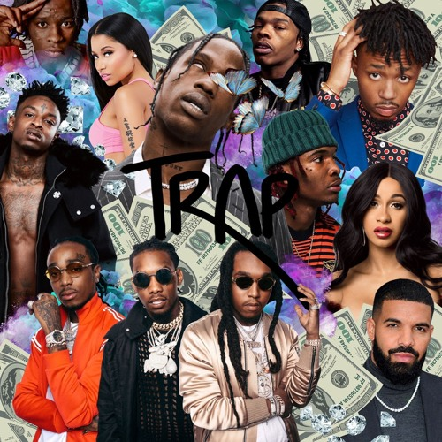

Trap
Trap ontstond in de late jaren 1990 in het zuiden van de VS. In de southern hiphop werd sinds die tijd trap-achtige beats gemaakt, en daar werd op gerapt. Deze muziekstijl wordt getypeerd door zijn 808 bass, hihats en synthesizers. Trap onderscheidt zich met name door zijn lange, diepe basstonen. Bekende artiesten in deze subgenre zijn b.v.b: Future, Travis Scott, 21 savage en XXXTentacion.
